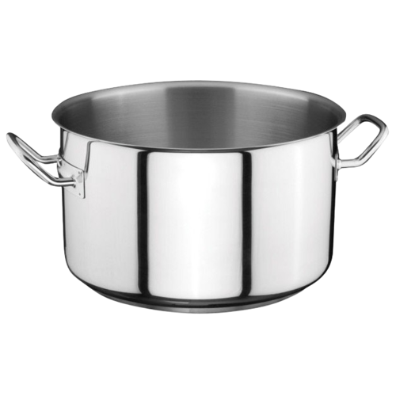
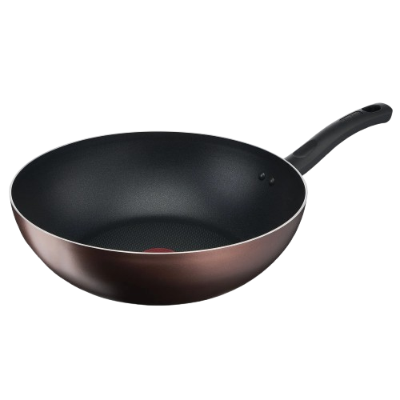
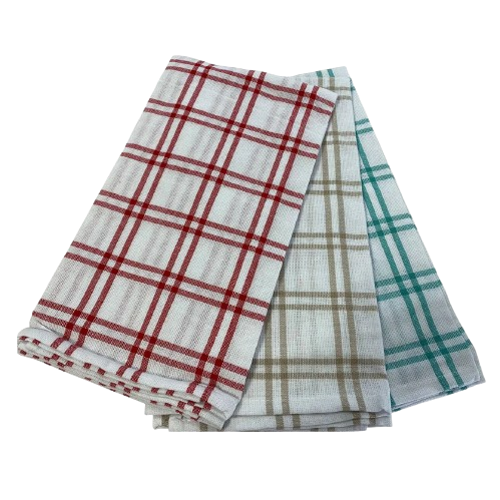
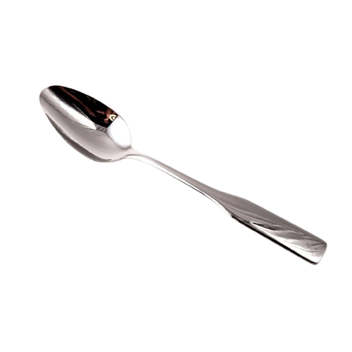
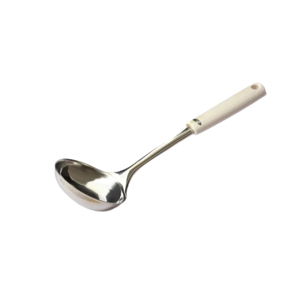
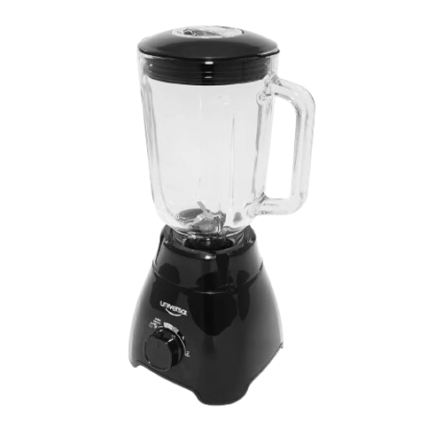
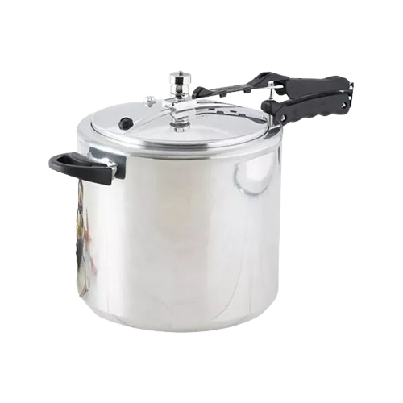

Utensilios

Olla

Sartén

Paño de cocina

Cuchara

Cuchara de cocina

Licuadora

Olla a presión
Ingredientes
1 1/2 cucharadas de aceite (21 g)
2 tallos de cebolla larga finamente picada (30 g)
2 tomates maduros sin piel y finamente picados (240 g)
1 sobre de CALDO CON COSTILLA MAGGI DESMENUZADO (9 g)
3 tazas de agua (750 ml)
1/2 libra de fríjoles bola roja remojados desde la noche anterior (250 g)
1 zanahoria mediana, entera y pelada (140 g)
1/4 libra de carne molida magra (125 g)
1/2 libra de arroz blanco cocinado (250 g)
1/4 libra de tocino carnudo cortado en 4 porciones (125 g)
4 chorizos tipo coctel previamente cocinados y dorados (120 g)
4 huevos fritos (200 g)
1 aguacate partido en 4 porciones (110 g)
4 arepas pequeñas redondas (80 g)
4 tajadas de plátano maduro fritas (80 g)
¡¡A Cocinar!!
PASO 1 Prepara los fríjoles
Calienta en una olla a presión una cucharada de aceite por 3 minutos a fuego medio; añade la cebolla, el tomate y el sobre de CALDO CON COSTILLA MAGGI DESMENUZADO y revuelve para integrar bien, finalmente cocina por 2 minutos o hasta que el tomate suelte sus jugos.
PASO 2 Agrega el agua
Adiciona las tres tazas de agua, los fríjoles y la zanahoria entera. Tapa la olla y cocina por 30 minutos.
PASO 3 Licúa la zanahoria con el caldo
Pasado el tiempo de cocción retira la olla del fuego, sácale el aire con cuidado antes de destapar. Saca la zanahoria y licúala con el caldo de los fríjoles.
PASO 4 Puntada final a los fríjoles
Agrega el licuado a la olla nuevamente para espesar, lleva a fuego bajo y revuelve de vez en cuando.
PASO 5 Prepara la carne molida
Calienta en una sartén el aceite restante por 3 minutos a fuego medio. Agrega la carne y con una cuchara revuelve, deja cocinar por 10 minutos o hasta que esté bien cocinada.
PASO 6 Prepara los chicharrones
En una olla de fondo alto agrega 2 tazas de agua y el tocino cortado en trozos; tapa la olla y lleva al fuego medio por 20 minutos o hasta que el tocino esté bien cocinado y crocante. Retira del fuego y déjalos en papel absorbente para retirar el exceso de grasa.
PASO 7 Prepara los chorizos
En una sartén pequeña adiciona dos cucharadas de agua y los chorizos. Lleva al fuego medio hasta que los chorizos estén bien dorados.
PASO 8 Prepara las arepas
En una parrilla o sartén a fuego medio debes poner las arepas y dorar por ambos lados.
PASO 9 Sirve y disfruta
En 4 bandejas o platos sirve arroz, fríjoles, carne molida, chicharrón, chorizo, huevo, aguacate, arepa y 1 tajada de plátano maduro, todo en porciones iguales.